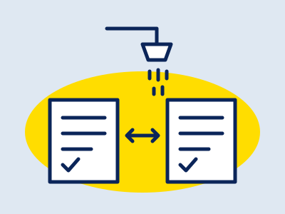
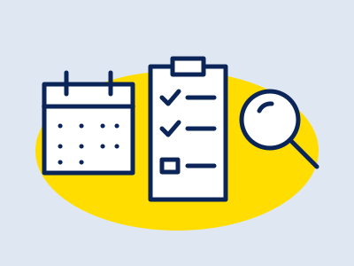
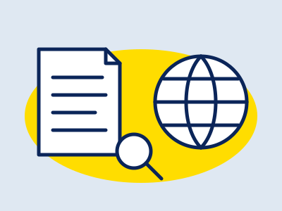
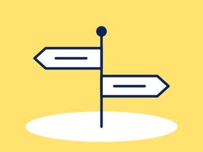
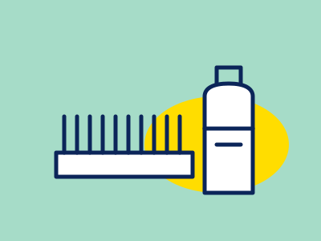

HAIR
公開 2026.10.09 / 更新 2026.10.09
公開 2026.10.07
公開 2026.10.07 / 更新 2026.10.07
 HAIR / CARE
公開 2026.09.29
公開 2026.09.27 / 更新 2026.10.07
公開 2026.09.13 / 更新 2026.10.09
HAIR / CARE
公開 2026.09.29
公開 2026.09.27 / 更新 2026.10.07
公開 2026.09.13 / 更新 2026.10.09
ヘア・AGA
抜け毛・薄毛が気になり始めたときの、育毛剤・発毛剤・医療機関の違いと確認したいことを整理した記事と、髪そのものの傷み・パサつきの手入れを、化粧品で言える範囲とあわせて出典つきで整理した記事です。

HAIR / US & JAPANケトコナゾールのシャンプーは日本で市販されている？
米国のケトコナゾール1%シャンプーの区分（FDAのモノグラフと個別承認）、日本の扱い（医療用医薬品、薬用シャンプーの効能の範囲）、フケの受診の目安、個人輸入のリスクを公的資料で整理。商品の紹介なし
+ 記事を読む
HAIR / CHECK育毛剤を見直すときの4つの確認
使い続けても変わらないと感じたときに、区分・使った期間・使い方・受診の目安を、添付文書と日本皮膚科学会の資料で確かめる順番を整理
+ 記事を読む
HAIR / JAPAN, US, EU & UKミノキシジル内服・外用フィナステリドの位置づけ
日本皮膚科学会ガイドライン（2017年版）の推奨度、国内の承認状況、米国FDA・欧州EMA・英国MHRAの安全性情報、個人輸入の注意点を一次資料で整理。商品・医療機関の紹介なし
+ 記事を読むHAIR / CARE髪の傷み・パサつきの手入れ
ドライヤー・カラー・紫外線・摩擦と髪の傷みの関係、ドライヤーと自然乾燥の考え方、ミルクとオイルの違い、化粧品の表示の読み方を出典つきで整理
+ 記事を読む
HAIR / CLINICAGA対策：セルフケアとクリニックの違い
市販の発毛剤・育毛剤で様子を見るか、受診するか。判断の目安を中立に整理
+ 記事を読む
HAIRヘア・スカルプケア
薄毛・抜け毛が気になり始めたら。頭皮ケアの成分と選び方
+ 記事を読む